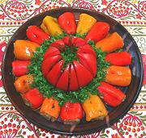

|
Peppers Stuffed with EggplantBulgaria - Salata ot Peceni Piperki Palneni s Püre ot Patladzani | ||||
| Serves: Effort: Sched: DoAhead: |
12 app *** 1-1/2 hrs Yes |
Stuffed peppers (and other stuffed things) are very popular in the Balkans. These small appetizers are easy to make, if you know how to stuff them (see below). | |||
|
ar 2 4 1-1/2 1/2 1 2 ----- |
# cl oz T T T --- t t |
Peppers (1) Eggplants Garlic Onion Salt Vinegar Olive Oil, ExtV -- Garnish Parsley, fresh Tomato Wedges |
They are best served cool, but not chilled. See notes for method. Make - (1-1/2 hrs - 45 min work)
|